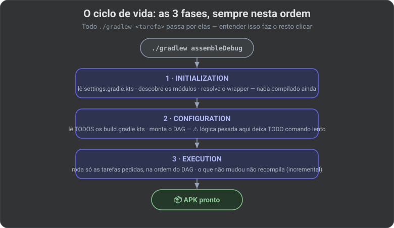
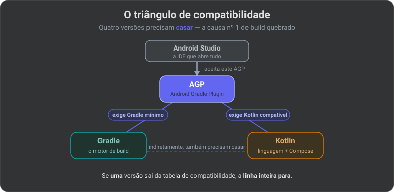

🐘 Gradle por Dentro: O Guia do Android Specialist (2026)
📚 Trilogia do build Android — leia nesta ordem:
- 🐘 Gradle (este artigo) — a fábrica que monta o app.
- 🤖 AGP — o especialista que ensina a fábrica a falar Android (tem uma seção aqui).
- 🧰 Android SDK & Setup — o almoxarifado de ferramentas (
aapt2,adb, emuladores,compileSdk…).
Entender o Gradle é a diferença entre "tentar a sorte" e "ter o controle". Aqui abrimos o capô da fábrica automatizada que transforma seu código em um app instalável — e explicamos cada engrenagem sem pular termo.
Os 3 atores (quem faz o quê)
Antes de tudo, tire da cabeça a ideia de que "Gradle = Android". São três coisas separadas colaborando:
VOCÊ ──► ./gradlew assembleDebug
│
┌────────────┴───────────────────────────────┐
▼ │
┌───────────┐ contrata ┌───────────┐ usa ▼
│ GRADLE │──────────────►│ AGP │──────►┌────────┐
│ (a fábrica)│ via plugin │(especialista│ │ SDK │
│ genérica │ │ Android) │ │(ferramentas│
└───────────┘ └───────────┘ │ + moldes)│
agenda tarefas, sabe o que é └────────┘
baixa peças, APK, res/, minSdk, aapt2, d8, r8,
cacheia trabalho variants, R8 adb, platforms
| Ator | O que é | Papel |
|---|---|---|
| Gradle | Uma ferramenta de build genérica (serve p/ Java, Kotlin, C++, até documentação) | O motor + gerente da fábrica: agenda, baixa dependências, cacheia |
| AGP (Android Gradle Plugin) | Um plugin oficial do Google para o Gradle | O especialista que ensina a fábrica a produzir Android |
| SDK (Software Development Kit) | Um conjunto de ferramentas instalado na sua máquina | O almoxarifado: as máquinas físicas (aapt2, d8) e os moldes (android.jar) |
🧠 Termo — build: é todo o processo de pegar código-fonte + recursos e produzir um artefato final (o app). "Buildar" = rodar esse processo.
O SDK tem artigo próprio (Android SDK & Setup). Aqui o foco é a fábrica (Gradle) e o especialista (AGP).
A Planta Baixa: o que cada arquivo faz
Cada arquivo do projeto tem um emprego. Confundir dois é o clássico "editei o build.gradle errado". Este é o mapa:
nexushubapp/
├── gradlew, gradlew.bat ........ o "gerente": sobe sempre a MESMA versão do Gradle
├── gradle/
│ ├── wrapper/
│ │ └── gradle-wrapper.properties ... qual versão do Gradle baixar (o "contrato")
│ └── libs.versions.toml ...... o ESTOQUE: todas as versões de libs num lugar só
├── settings.gradle.kts ......... o MAPA: quais módulos existem + de onde baixar
├── build.gradle.kts ............ a PORTARIA (raiz): registra os plugins oficiais
├── gradle.properties ........... o PAINEL: RAM, paralelismo, caches, flags
├── app/
│ └── build.gradle.kts ........ a LINHA DO PRODUTO: gera o APK/AAB
├── core/
│ ├── common/build.gradle.kts . uma LINHA DE PEÇA: gera um AAR interno
│ ├── network/build.gradle.kts
│ └── ...
└── build-logic/ ................ a COZINHA DE RECEITAS (convention plugins)
| Arquivo | Papel na fábrica | O que faz |
|---|---|---|
gradlew / gradlew.bat |
Motor + gerente | Sobe sempre o mesmo Gradle. Você não instala Gradle na máquina — o wrapper baixa a versão do contrato. |
gradle/wrapper/gradle-wrapper.properties |
Contrato do motor | Qual ZIP do Gradle usar + o selo de autenticidade (distributionSha256Sum). |
settings.gradle.kts |
Mapa do terreno | Quais módulos existem (include) e de onde vêm as libs. É o 1º arquivo lido. |
build.gradle.kts (raiz) |
Portaria de ferramentas | Registra os plugins com apply false. Não gera APK. |
gradle/libs.versions.toml |
Estoque central | Versões, bibliotecas, combos e plugins — tudo num lugar. |
gradle.properties |
Painel de regulagem | RAM do Daemon, paralelismo, caches, AndroidX. |
app/build.gradle.kts |
Linha do produto | O único com.android.application. Gera o APK/AAB. |
core/*/build.gradle.kts |
Linhas de peças | com.android.library. Geram AAR interno que o :app consome. |
build-logic/ |
Cozinha de receitas | Convention plugins: uma receita mestra de SDK/Java/Compose. Não gera APK. |
🧠 Termos — APK, AAB, AAR:
- APK (Android Package): o app empacotado, pronto para instalar num aparelho.
- AAB (Android App Bundle): o formato que você envia para a Play Store; ela gera APKs otimizados por aparelho a partir dele.
- AAR (Android Archive): uma "biblioteca Android" empacotada — o produto de cada módulo
:core:*, consumido internamente pelo:app.
Regra de ouro: versão mora no TOML · módulo mora no settings · regulagem mora no properties · receita repetida mora no build-logic. O build.gradle.kts de cada módulo só puxa a receita e lista as peças.
O Ciclo de Vida: como a fábrica "pensa"
Todo comando ./gradlew <tarefa> passa por três fases, sempre nesta ordem. Entender isso faz o resto do artigo clicar:

🧠 Termo — DAG (Directed Acyclic Graph / grafo dirigido acíclico): é o "mapa de setas" das tarefas. Ex.:
compilaraponta paraempacotar, que aponta paraassinar. "Acíclico" = as setas nunca formam um ciclo (senão a fábrica travaria esperando a si mesma). O Gradle monta esse mapa na fase 2 e o executa na fase 3.
Por que isso importa: um Thread.sleep, um download ou I/O pesado na fase de Configuration infla todo comando — até um simples ./gradlew tasks. É a causa nº 1 de "meu Gradle é lento".
1. O Gerente: gradlew (o Wrapper)
O gradlew (Gradle Wrapper) garante que todo mundo — você, o colega, o servidor de CI — rode exatamente a mesma versão do Gradle. Por isso o comando é sempre ./gradlew …, e nunca gradle … (esse último usa o que estiver instalado na máquina — uma roleta de versões).
O "contrato" está em gradle/wrapper/gradle-wrapper.properties:
distributionUrl— qual ZIP do Gradle baixar (ex.:gradle-9.3.1-bin.zip).distributionSha256Sum— o selo de autenticidade: uma "impressão digital" do ZIP. Se alguém trocar o arquivo no caminho, a impressão não bate e o Gradle recusa rodar.
🧠 Termo — Daemon: o Gradle roda num processo que fica vivo em segundo plano entre builds (o Daemon). Ele mantém a JVM "quente" na memória, então o 2º build é bem mais rápido que o 1º. Se algo travar,
./gradlew --stopmata o Daemon e o próximo comando sobe um limpo.
🔒 Visão Specialist: em empresa, o
distributionSha256Sumimpede rodar um motor de build adulterado. Segurança começa antes da primeira linha compilar.
2. O Mapa: settings.gradle.kts
É o primeiro arquivo lido (fase de Initialization). Define quem existe, não como cada módulo é compilado.
pluginManagement { repositories { … } }— de onde baixar os plugins (AGP, Kotlin, Hilt).dependencyResolutionManagement { repositories { … } }— de onde baixar as bibliotecas. UsamosFAIL_ON_PROJECT_REPOSpara travar: nenhum módulo pode abrir um repositório escondido por conta própria. Um portão só, controlado.include(":app"),include(":core:common")— registra cada módulo. Pasta semincludenão é módulo — o Gradle finge que não existe.includeBuild("build-logic")— ativa o composite build (a cozinha de receitas). Detalhe na seção 9.
🧠 Termo — repositório: um servidor de onde o Gradle baixa dependências prontas (ex.:
google(),mavenCentral()). É a "loja de peças" da fábrica.
🧠 Termo — módulo: uma parte independente do projeto que compila separado (
:app,:core:network). Modularizar = builds mais rápidos e fronteiras claras entre partes do código.
3. A Portaria: build.gradle.kts da raiz
Não é linha de montagem — é o registro de ferramentas oficiais. Aqui os plugins entram com apply false:
plugins {
alias(libs.plugins.android.application) apply false // registra, NÃO usa aqui
alias(libs.plugins.android.library) apply false
alias(libs.plugins.kotlin.android) apply false
}
apply false = "a fábrica conhece essa ferramenta, nesta versão, mas não a usa neste arquivo". Cada módulo depois chama o mesmo plugin sem apply false, e aí sim ele entra em ação naquela linha específica (detalhe do porquê na seção do AGP, abaixo).
⚠️ Erro comum: colocar
compileSdk,implementation(...)ou config de Room aqui. Isso é misturar a portaria com o chão de fábrica. Dependência mora no módulo; regra de SDK repetida mora nobuild-logic.
🤖 O Especialista: AGP (Android Gradle Plugin)
O Gradle sozinho não faz ideia do que é um AndroidManifest.xml, um APK ou o que significa minSdk. Quem traz esse conhecimento é o AGP.
O que o AGP adiciona à fábrica
Aplicar com.android.application (ou com.android.library) liga capacidades que o Gradle puro não tem:
- O bloco
android { … }— ele só existe porque o AGP o registrou. Sem AGP,compileSdké erro de compilação. - As tarefas de montagem Android: mesclar manifests, rodar
aapt2,d8/r8, empacotar e assinar o APK/AAB. - Build Variants (seção 7), geração de
BuildConfig, e a integração do Lint.
🧠 Termos rápidos:
aapt2compila os recursos (imagens, XML) e gera a classeR;d8converte bytecode em DEX (o formato que o Android executa);r8faz o mesmo + encolhe/ofusca o código. Essas máquinas moram no SDK — o AGP só as comanda. O AGP é o maestro; o SDK é a orquestra.
O triângulo de compatibilidade (a causa nº 1 de build quebrado)
Três (na prática, quatro) versões precisam casar. Se uma sai da tabela, a linha inteira para:

| Peça | Papel | Onde a versão mora |
|---|---|---|
| Gradle | O motor genérico | gradle/wrapper/gradle-wrapper.properties |
| AGP | O especialista Android | libs.versions.toml → agp = "8.7.3" |
| Kotlin | O compilador da linguagem | libs.versions.toml → kotlin = "2.0.21" |
| Android Studio | A IDE | O app instalado na máquina |
- AGP ⇄ Gradle: cada AGP exige um Gradle mínimo. AGP novo + Gradle velho =
"plugin requires Gradle X.Y". - AGP ⇄ Android Studio: Studio velho não abre projeto com AGP novo (daí o aviso "Android Gradle Plugin update recommended").
- Kotlin ⇄ Compose: desde o Kotlin 2.0, o Compose Compiler é atrelado à versão do Kotlin, via o plugin
kotlin-compose.
🔒 Visão Specialist: antes de subir qualquer uma dessas versões, consulte a tabela de compatibilidade AGP/Gradle oficial. O
agpmora no TOML justamente para essa troca ser em um único lugar.
Por que apply false na raiz + alias no módulo?
build.gradle.kts (raiz) app/build.gradle.kts
┌───────────────────────┐ ┌───────────────────────┐
│ alias(...application) │ │ alias(...application) │
│ apply false │ ───► │ (SEM apply false) │
│ "conheço, não uso" │ │ "agora, use aqui!" │
└───────────────────────┘ └───────────────────────┘
versão definida 1x ativado por módulo
Isso garante uma versão única de AGP no projeto todo, mesmo com 50 módulos. (Quando o build-logic entra — seção 9 — nem o alias aparece no módulo: o convention plugin aplica o AGP por baixo.)
4. O Estoque: libs.versions.toml (Version Catalog)
Um número de versão vive uma vez. Nenhum build.gradle.kts escreve "2.6.1" na mão. Isso dá type-safety (o Android Studio autocompleta e avisa erro de digitação) e uma fonte única de verdade.
| Seção | O que guarda | No código vira |
|---|---|---|
[versions] |
Os números (agp = "8.7.3") |
version.ref = "room" |
[libraries] |
As bibliotecas (group + name + versão) |
libs.room.runtime |
[bundles] |
"Combos" de libs que andam juntas | libs.bundles.compose (5 libs, 1 linha) |
[plugins] |
Os plugins (id + versão) |
alias(libs.plugins.android.application) |
🧠 Termo — type-safe: o compilador verifica em tempo de build. Se você digitar
libs.room.runtimerrado, ele acusa antes de rodar — não vira um erro misterioso no meio do build.
5. O Painel: gradle.properties (e os caches)
Aqui não se cadastra módulo nem lib — aqui se regula a fábrica:
org.gradle.jvmargs=-Xmx2048m— RAM do Daemon. Motor sem memória = garbage collection eterno.org.gradle.parallel=true— compila módulos independentes em paralelo.org.gradle.caching=true— liga o Build Cache.org.gradle.configuration-cache=true— liga o Configuration Cache.android.useAndroidX=true— usa as bibliotecas modernas (AndroidX), não as antigas (Support Library).android.nonTransitiveRClass=true— cada módulo enxerga só o próprioR: build mais rápido e fronteiras limpas.
Os três níveis de cache (por que o 2º build voa)
Mudou 1 arquivo? ──► Incremental Build ──► recompila SÓ ele (sempre ligado)
Input idêntico ao de antes? ──► Build Cache ──► reusa o resultado pronto
Nenhum build.gradle mudou? ──► Configuration Cache ──► pula a fase 2 inteira
| Cache | Evita repetir | Ligado por |
|---|---|---|
| Incremental | Recompilar arquivo intacto | Padrão |
| Build Cache | Refazer tarefa com input idêntico | org.gradle.caching |
| Configuration Cache | Remontar o DAG (a fase 2) | org.gradle.configuration-cache |
🔒 Visão Specialist: build lento quase sempre é fase de Configuration inchada ou grafo de módulos emaranhado — não "o Kotlin é lento". Lógica pesada na Configuration quebra o Configuration Cache.
6. A Linha de Produção: build.gradle.kts de cada módulo
Existem dois tipos de linha, definidos pelo plugin:
| Plugin aplicado | Quem usa | Produto | Identidade |
|---|---|---|---|
com.android.application |
só o :app |
APK/AAB | tem applicationId |
com.android.library |
cada :core:* |
AAR | tem namespace, não tem applicationId |
namespace— a identidade do código gerado (R,BuildConfig), ex.:com.eduardo.nexushub.core.network.applicationId— a identidade do app na loja e no aparelho. Só o:apptem. Confundir os dois é o clássicocom.example.myapplicationesquecido do template.
Como os módulos enxergam uns aos outros
O tipo de declaração de dependência muda quem herda o quê:
┌─────────┐
│ :app │ amarra o produto final
└────┬────┘
implementation(project(...))
┌────┴────────────┬─────────────┐
▼ ▼ ▼
┌──────────┐ ┌──────────┐ ┌──────────┐
│:core:ui │ │:core:net │ │:core:db │
└────┬─────┘ └────┬─────┘ └────┬─────┘
└────────────────┴──────────────┘
▼
┌──────────┐
│:core: │ a base comum
│ common │
└──────────┘
| Declaração | Significado |
|---|---|
implementation(project(":core:network")) |
Uso a peça, mas ninguém acima herda essa dependência. Grafo estreito = build rápido. |
implementation(lib) |
A lib é privada deste módulo. |
api(lib) |
A lib vaza para quem depender deste módulo (efeito cascata — recompila o mundo). Use quase nunca. |
debugImplementation(lib) |
Só na variante debug (ferramentas de dev). |
testImplementation(lib) |
Só na bancada de testes. |
ksp(lib) |
Roda um processador de anotações (Room, Hilt) — ver termo abaixo. |
🧠 Termo — KSP vs Kapt: bibliotecas como Room geram código a partir de anotações (
@Entity). O Kapt faz isso fingindo que Kotlin é Java (lento). O KSP (Kotlin Symbol Processing) lê Kotlin de verdade (rápido). Regra 2026: prefira KSP; use Kapt só quando a lib ainda não suportar KSP.
🔒 Visão Specialist: feature não depende de feature. Só de
:core. Quem costura tudo é o:app.
7. As Variantes: uma fábrica, vários produtos
Uma Build Variant é a multiplicação Product Flavor × Build Type. O Gradle não faz um if em runtime — ele monta um produto diferente para cada célula da matriz:
BUILD TYPES (COMO é construído)
┌──────────┬──────────┐
│ debug │ release │
P ┌──────────┼──────────┼──────────┤
F │ demo │demoDebug │demoRelease│
L ├──────────┼──────────┼──────────┤
A │ prod │prodDebug │prodRelease│ ◄── o que vai pra Play
V └──────────┴──────────┴──────────┘
O (O QUE o app contém)
R
Build Types — como o app é construído
debug— o protótipo: logs abertos, não otimizado. AceitadebugImplementation(ferramentas que nunca vão pro release).release— o produto final. Você ligaisMinifyEnabled = truepara acionar o R8 (encolhe + ofusca + remove código morto). O nome "release" não liga o R8 sozinho.
Product Flavors — o que o app contém
Sabores de mercado: demo vs prod, ou free vs premium. Podem se cruzar em dimensões e a matriz gera as combinações automaticamente.
Source Sets — o segredo, sem if
O AGP mescla pastas, do genérico para o específico. O mais específico ganha:
src/main/ (base) ◄─ sobrescrito por ─ src/demo/ ◄─ src/demoDebug/
Assim uma classe AppConfig.kt pode ser diferente em demo e em prod sem um único if — o Gradle escolhe o arquivo certo na montagem.
🧠 Termo — R8 / ofuscação: "ofuscar" é renomear classes e métodos para nomes sem sentido (
a,b,c), dificultando engenharia reversa e encolhendo o app. SemisMinifyEnabled = true, seu "release" é só um debug gordo.
8. O Arsenal do Terminal
Sempre ./gradlew, a partir da raiz. O CI não clica no ▶ do Studio — ele manda estas ordens:
| Comando | O que faz |
|---|---|
./gradlew assembleDebug |
Monta o APK debug. |
./gradlew :app:assembleProdRelease |
Monta a célula prod × release da matriz. |
./gradlew bundleProdRelease |
Gera o AAB da Play (não APK). |
./gradlew installDebug |
Monta e instala no device/emulador (usa o adb por baixo). |
./gradlew lint |
Inspeção estática do AGP (bugs, APIs, performance). |
./gradlew test |
Testes JVM de todos os módulos. |
./gradlew :app:dependencies |
Radiografia: quais libs entraram e de onde. |
./gradlew --stop |
Desliga o Daemon. |
🧠 Termo — CI/CD: Continuous Integration/Delivery — servidores que buildam e testam seu código automaticamente a cada push. Eles usam exatamente esses comandos de terminal.
9. A Cozinha de Receitas: build-logic (Convention Plugins)
O problema que ele resolve: sem ele, cada build.gradle.kts copia compileSdk, minSdk, Java, Compose… Com 50 módulos, a cópia diverge — um fica em SDK 34, outro em 35 — e ninguém percebe.
A solução: escrever a receita uma vez como um plugin, e cada módulo só aplica.
ANTES (cada módulo repete tudo) DEPOIS (uma receita, todos aplicam)
app/build.gradle.kts ┐ build-logic/ ◄── a receita mestra
core/ui/... │ 40 linhas │
core/net/... │ IGUAIS, ┌────┴─────┬──────────┐
core/db/... │ copiadas ▼ ▼ ▼
core/common/... ┘ app/ core/ui/ core/net/
id(...) id(...) id(...) ← 1 linha
O build-logic não é um módulo Android: não tem compileSdk, não gera APK, não entra no grafo :app → :core. É uma fábrica irmã (composite build) cujo produto são plugins.
Como a cozinha se conecta
// settings.gradle.kts (raiz)
pluginManagement {
includeBuild("build-logic") // "existe outra fábrica ali; compile-a primeiro"
}
🧠
includeBuild≠include:include(":core:ui")registra um módulo do mesmo projeto.includeBuild("build-logic")diz: "existe outro projeto Gradle completo ali — compile-o antes e me dê os plugins que ele produzir". É o tubo entre a cozinha e o chão de fábrica.
Anatomia da pasta
build-logic/
├── settings.gradle.kts ← o mapa da cozinha (não o do app)
└── convention/
├── build.gradle.kts ← usa `kotlin-dsl`; depende do AGP como ferramenta
└── src/main/kotlin/
├── AndroidApplicationConventionPlugin.kt
├── AndroidLibraryConventionPlugin.kt
└── AndroidLibraryComposeConventionPlugin.kt
Cada classe implementa Plugin<Project> e, no método apply, faz o trabalho repetitivo: aplica o AGP + Kotlin, configura compileSdk/minSdk/Java, liga o Compose etc. Ganha um id (ex.: nexushub.android.library).
O que sobra no módulo
plugins {
id("nexushub.android.library") // toda a receita, 1 linha
}
dependencies {
implementation(libs.androidx.core.ktx) // só o que é ÚNICO deste módulo
}
Mudou o minSdk da empresa? Um arquivo, e o projeto inteiro herda.
🔒 Visão Specialist: se o
build.gradle.ktsde uma feature ainda declaracompileSdk, a cozinha não está no comando — a linha está improvisando. Este é o Dia 3 do roadmap deste projeto.
10. 🔒 Bônus Enterprise: Repositórios Internos
Em grandes empresas a fábrica não acessa a internet aberta: um proxy de repositórios (Artifactory/Nexus) atua como firewall, escaneando cada biblioteca em busca de CVEs antes de liberar.
🧠 Termo — CVE (Common Vulnerabilities and Exposures): um identificador público de falha de segurança conhecida (ex.:
CVE-2021-44228, o Log4Shell). O proxy bloqueia libs com CVE aberto.
No nosso settings, o mesmo espírito já existe: google() + mavenCentral() + FAIL_ON_PROJECT_REPOS = um portão único e controlado. Trocar por Artifactory depois é mudar o endereço, não a arquitetura.
📖 Glossário-relâmpago
| Termo | Em uma linha |
|---|---|
| Gradle | A ferramenta de build genérica (o motor da fábrica). |
| AGP | O plugin que ensina o Gradle a fazer Android. |
| Daemon | O processo do Gradle que fica vivo para o 2º build ser rápido. |
| DAG | O mapa de dependências entre tarefas (montado na fase Configuration). |
Wrapper (gradlew) |
Trava a mesma versão do Gradle para todos. |
| Version Catalog | O libs.versions.toml: versões num lugar só. |
| APK / AAB / AAR | App instalável / bundle da Play / biblioteca interna. |
| bytecode / DEX | Código intermediário / o formato que o Android executa. |
| R8 | Encolhe + ofusca o código no release (isMinifyEnabled). |
| KSP / Kapt | Geradores de código por anotação (KSP é o moderno e rápido). |
| Build Variant | Flavor × BuildType — um produto por célula da matriz. |
| Composite build | Um projeto Gradle incluído dentro de outro (build-logic). |
| CVE | Identificador público de vulnerabilidade de segurança. |
Bússola técnica do Gradle no NexusHub. Próximo da trilogia: o Android SDK & Setup.